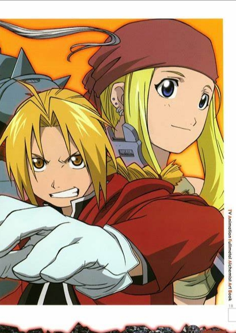

 The manga has sold over 80 million copies worldwide, making it one of the best-selling manga series of all time. It received the 49th Shogakukan Manga Award for the shōnen category in 2004, the UK's Eagle Award for favorite manga in 2010 and 2011, and the Seiun Award for best science fiction comic in 2011. Reviewers from several media outlets positively critiqued the series, particularly for its character development, action scenes, symbolism, and philosophical references.
Fullmetal Alchemist has been adapted into various anime—two television series, released in 2003 and 2009, and two films, released in 2005 and 2011, all animated by Bones—as well as light novels. The series has generated original video animations (OVAs), video games, supplementary books, a collectible card game, and a variety of action figures and other merchandise. A live-action film based on the series was released in 2017, and two sequels in 2022. In North America, the manga was localized and published in English by Viz Media. Yen Press has the rights for the digital release of the volumes since 2014.